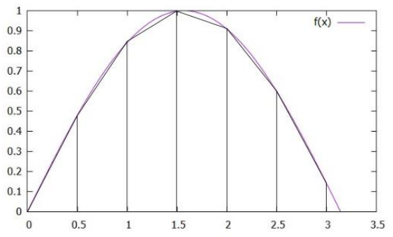

Contents
Numerical Method
Numerical method is a technique used to formulate a mathematical problem in order to make it solvable using arithmetic operations.
Numerical method is used to solve a problem when it's deemed too complicated to solve analytically.
A solution obtained by a numerical method is a numerical approximation, unlike the exact solution obtained by analytical method.
Thus, it will contains a degree of error. However, through optimizations and generally increasing the number of iterations or decreasing step sizes, its error could be controlled to
meet certain satisfiable threshold.
For instance, Figure 1.1 below shows the use of numerical method to calculate the approximate solution for the definite integral
$\int_{0}^{\pi} \sin(x) dx. $
Reducing the error of approximation, as intuition would suggests, can be done by increasing the number of partitions used at the expense of longer
computational time.

Figure 1.1 Graph of the numerical integration for $\int_{0}^{\pi} \sin(x) dx. $
Computing in Geophysics
Computation is defined as a method of problem solving from a data inputs using certain algorithms.
It holds a vital role in geophysics as a multidisciplinary science comprising of mathematics, physics, geology, and computer sciences.
References
Chapra, S.C, & Canale, R.P. (2014). Numerical Methods for Engineers, 7th Edition. McGraw Hill.
© 2023 Geophysics Wiki